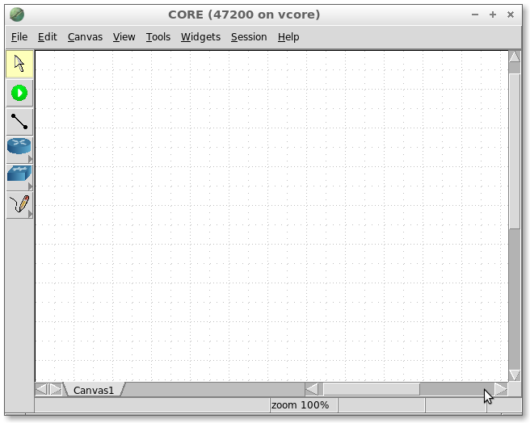

Comment utiliser CORE ?
Pour des raisons de sécurité, l'application CORE est exécutée dans une machine virtuelle Linux. Vous pouvez télécharger l'image virtuelle qui est utilisée en cours à cette adresse : ftp://ci.isae.fr/vcore.ova. Il vous faudra pour la lire un logiciel de lancement d'image virtuelle tel Virtual Box disponible gratuitement. Il est également possible d'installer CORE directement sur votre machine si vous êtes sous Linux. Pour cela, voir Installing CORE on Ubuntu ou visitez le site web du projet CORE pour d'autres types d'image (VMWare, ...). Dans les salles de classe ISAE, CORE se démarre comme décrit ci-dessous:
Ouvrez un terminal : Application/System Tools/Terminal
- Dans le terminal, tapez
start_core
- La machine virtuelle ouvre une fenêtre dans laquelle vous pouvez lancer l'émulateur CORE en cliquant sur l'icône correspondante sur le bureau
- Pour échanger des fichiers entre la machine virtuelle et son hôte sous Linux vous devez copier depuis votre machine de travail vos fichiers sous le repertoire
/scratch/shared_core (par exemple : cp file.txt /scratch/shared_core). Vous les retrouverez dans la machine virtuelle sous le répertoire /media/sf_shared_core

Mode Edit & Execute
L'émulateur CORE dispose de deux modes de fonctionnement: Edit et Execute.
Par défaut, CORE GUI (Graphical User Interface) démarre en mode Edit, et présente une toile vierge et une barre d'outils sur le côté gauche de la toile. L'utilisateur peut alors dessiner un scénario de réseau en utilisant les outils en mode Modify, puis exécuter la simulation en appuyant sur la touche verte Start.
Démarrez la simulation en cliquant sur le bouton Start. CORE exécute des commandes qui démarrent toutes les machines virtuelles et les relient entre elles de la manière indiquée sur la toile.
Une fois exécuté, les différents noeuds du réseau sont en cours d'exécution en temps réel, comme si vous étiez en présence d'un véritable ensemble d'ordinateurs, routeurs, commutateurs et câbles.
Essayez par vous-même
- Lancez une nouvelle session CORE
- Chargez le réseau nommé "Simple.imn"
- Lancez (bouton vert) l'émulation
- Ouvrez un shell sur la station n1 (il suffit de double cliquer sur n1 pour obtenir un terminal)
- Effectuez un ping depuis n1 vers n3 en utilisant son adresse IP (qui devrait être 10.0.0.22) en tapant dans le terminal n1:
ping 10.0.0.22 vous devriez voir le résultat de la commande ping en temps réel ! Nous verrons dans la suite de ce cours plus de détail sur la commande ping et d'autres outils réseaux
- Arrêtez la session d'émulation (bouton rouge)
- Ajoutez une nouvelle station et connectez là avec n7
- Lancez la session
- Essayez un ping entre n1 et cette nouvelle station
- Arrêtez l'émulation
Il est important d'arrêter les sessions d'émulation, car elles utilisent de nombreuses ressources en arrière-plan. Vérifiez qu'il n'y a pas plus d'émulation en cours d'exécution (Session / Change Session et supprimer la session appropriée si elle existe)